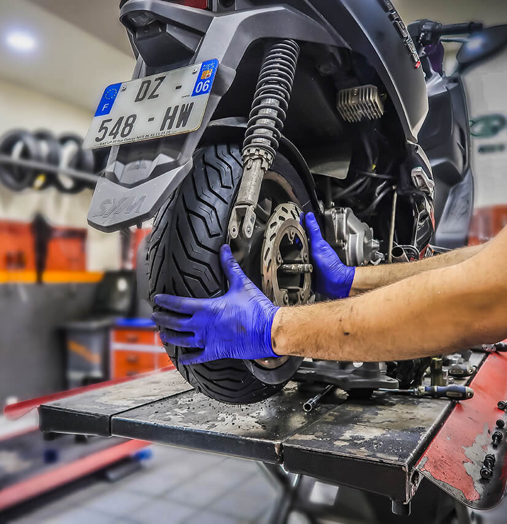

Nos services
Nous sommes à votre disposition pour l'entretien et la réparation de votre scooter.

Révision et entretien
Nous proposons différents forfaits de révision et d'entretien pour votre scooter, afin de garantir son bon fonctionnement et sa sécurité.
- Petite révision: vidange et remplacement du filtre à huile
- Révision standard: vidange, filtres à huile et air, contrôle des niveaux
- Grande révision: révision standard + contrôle et graissage des éléments mécaniques
Réparation
Nos mécaniciens qualifiés prennent en charge toutes les réparations de votre scooter, quelle que soit la panne.
- Moteur et transmission
- Freinage
- Electricité et éclairage
- Pneumatiques
- Carrosserie
Autres services
- Dépannage
- Montage d'accessoires
- Conseil et expertise